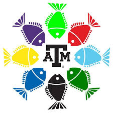
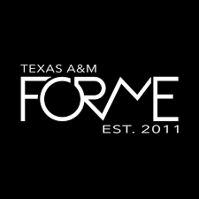

SEC (Student Engineering Council)
EnVision Conference
I had the privilege of serving as a Team Leader where I led and educated a group of high schoolers on what it means to be an engineer and the different types of engineering. Through a tour of Zachry and several different engineering activies and puzzles, I advocated for engineering awareness, what it means to be an engineer, and the importance of STEM majors. I was able to be a role model for the high schoolers and positively influence their future education plans.
DI Saturday
I volunteered to work a table at DI Saturday, an event where freshmen engineers learn about the different
engineering majors. After attending this as a freshman two years ago, I understand the confusion and overwhelmingness
of figuring out a major path and applying, so I was glad to be a guiding hand for the new freshmen.
RYLLIES (Respection Yourself while demonstrating Leadership, Loyalty, Integrity, Excellence, and Selfless Service)
Read By Third
This program is to support children's ability to read before reaching the third grade; studies have shown high correlation between third grade literacy and future success. As a volunteer, I read to children at Anson Jones Elementary School several times each semester. This service project is very close to my heart since I loved to read as a child. I love getting to know I am instilling that same love for reading in these kids and helping them build a better future.
Waterford
In this service project, I wrote and decorated letters to assisted living patients in a local nursing home. Also, I go and play bingo with the residents several times a semester. I have greatly enjoyed getting to interact with these residents and listen to their stories and wisdom.

Fish Camp
Session E Purple Camp Bergman (2024)
As a second year counselor, I increased my responsibilities and took on a greater leadership role. Throughout all camp events, I led inexperienced counselors to ensure everyone was ready to be fully present at camp. I did more behind-the-scenes work such as making crafts and organizing forms. At camp, I took an active role in connecting with the freshmen and teaching them about Texas A&M. After leaving camp, I have worked to maintain the relationships formed and push the freshmen to be involved on campus.
Session C Aqua Camp Little (2023)
I had an opportunity to directly benefit the incoming future freshmen of Texas A&M. I was very involved in the preparation work
before camp, and once I actually arrived at Lakeview, I performed educational skits and led discussion groups to educate the freshmen
about the traditions and culture of Texas A&M. I also stayed in contact with the freshmen through continuity events to ensure they
experienced great success at Texas A&M and found community and joy here.

The Big Event
Staff Assistant (2024)
As a Staff Assistant, I got to take a more active role in The Big Event. I attended weekly meetings and office hours, and I completed jobsite checks to make sure each house had the tools needed. I also participated in the Fall Service Project at Twin City Mission in Bryan where I did various gardening activities to maintain the grounds. On the day of The Big Event, I assisted in tool handout and helped direct volunteers.
Volunteer (2023)
I volunteered with a group to weed and mulch a local resident's garden.
